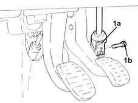
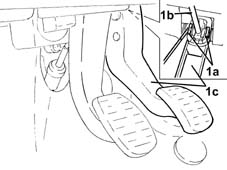
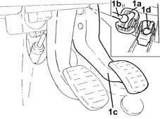
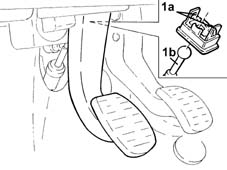
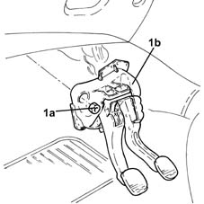
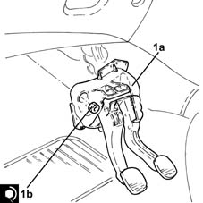
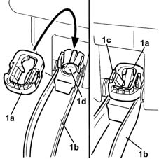
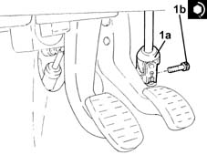

3330B02 pedal assembly - r r
- Path
- Procedures > 33 BRAKING SYSTEM > 3330 HYDRAULIC BRAKING SYSTEM > 3330B pedal unit > 3330B02 pedal assembly - r r
- Kind
- repair procedure (removal / refitting; the operation number is the code)
- Applies to
- all engines; all production periods
- Interactive page
- https://sloeber94.github.io/elrnDB-lYpsln/en/#/2429167
Applies to: all engines; all production periods
 Removing
Removing
 Refitting
RefittingEnsure that the ignition key is in OFF position, then disconnect the battery negative terminal (-).
 | Name | Connector |
|---|---|---|
- | Battery |
Applies to: engines: 1.2 8v; all production periods
Proceed with removal 1068A14 accelerator pedal - r + r .
Applies to: engines: 1.2 16v, 1.4 16v; all production periods
Proceed with removal 1068A20 accelerator pedal with built-in potentiometer - r r .
Applies to: engines: 1.2 16v, 1.4 16v; all production periods
Proceed with removal 7040A30 Left instrument panel lower TRIM - R.R. .
Undo both bolts and remove the underfacia beam lower reinforcement.
1. Release the steering column universal joint (1a) by undoing the bolt (1b) securing it to the steering box.

Applies to: engines: 1.2 8v, 1.2 16v, 1.4 16v; all production periods
Proceed with removal 1056B78 SWITCH on CLUTCH PEDAL - R.R. .
Proceed with removal 5550D10 brake light switch - r+r .
Applies to: engines: 1.3 JTD; all production periods
Proceed with removal 1060G38 brake pedal switch - r r .
Proceed with removal 1060G42 clutch pedal switch - r r .
Applies to: engines: 1.3 JTD; all production periods
1. Working at the rear of the brake pedal, press the white coloured retaining tabs (1a) which secure the brake servo push rod (1b) to the brake pedal (1c).

Applies to: engines: 1.3 JTD; all production periods
1. Remove the black coloured retaining device (1a), then release the brake servo push rod (1b) from the brake pedal (1c) and keep the cover (1d) for the brake servo push rod spherical head seat.

Applies to: engines: 1.3 JTD; all production periods
1. Release the retaining clips (1a) and disengage the clutch master cylinder push rod (1b) from the pedal.

Applies to: engines: 1.3 JTD; all production periods
1. Undo the nuts (1a) and remove the pedal assembly (1b).

Applies to: all engines; all production periods
Refitting
Removing1. Fit the pedal assembly (1a) back in its housing and tighten the nuts (1b) to the specified torque.
 | Fastening | Component | Ø | Value (daNm) |
|---|---|---|---|---|
- | Nut | PEDALS | M8 | (Brake servo/bodyshell side) 1.8 ÷ 2.6 |

Applies to: all engines; all production periods
Connect the clutch pedal by replacing in its seat and press the pedal fully down.
1. Fit the new retaining device (1a) onto brake pedal (1b) to secure the retaining clips (1c). Position the cover (1d) for the brake servo push rod spherical head.

Applies to: all engines; all production periods
Lift up the brake pedal and position the brake servo push rod by the retaining device.
Press the brake pedal to engage the brake servo push rod with the retaining device.
Applies to: engines: 1.3 JTD; all production periods
Proceed with refitting 1060G38 brake pedal switch - r r .
Proceed with refitting 1060G42 clutch pedal switch - r r .
Applies to: engines: 1.2 8v, 1.2 16v, 1.4 16v; all production periods
Proceed with refitting 5550D10 brake light switch - r+r .
Proceed with refitting 1056B78 SWITCH on CLUTCH PEDAL - R.R. .
Applies to: engines: 1.2 8v, 1.2 16v, 1.4 16v; all production periods
1. Connect the steering column universal joint (1a) and fasten it tightening the bolt (1b) to the recommended torque.
| Fastening | Component | Ø | Value (daNm) |
|---|---|---|---|---|
1b | Bolt | INTERMEDIATE SHAFT CONNECTED TO STEERING BOX. | M10 | (Steering box side) 5.0 ÷ 6.1 |

Applies to: engines: 1.2 8v, 1.2 16v, 1.4 16v; all production periods
Refit the underfacia beam lower reinforcement and tighten the bolts
Proceed with refitting 7040A30 Left instrument panel lower TRIM - R.R. .
Applies to: engines: 1.2 16v, 1.4 16v; all production periods
Proceed with refitting 1068A20 accelerator pedal with built-in potentiometer - r r .
Applies to: engines: 1.2 8v; all production periods
Proceed with refitting 1068A14 accelerator pedal - r + r .
Applies to: engines: 1.2 8v; all production periods
Connect the negative (-) battery terminal.
Topics linked from this page (8)
- 1056B78 SWITCH on CLUTCH PEDAL - R.R.
- 1060G38 brake pedal switch - r r
- 1060G42 clutch pedal switch - r r
- 1068A14 accelerator pedal - r + r
- 1068A20 accelerator pedal with built-in potentiometer - r r
- 5550D10 brake light switch - r+r
- 7040A30 Left instrument panel lower TRIM - R.R.
- A1B Battery ( BATTERY NEGATIVE )